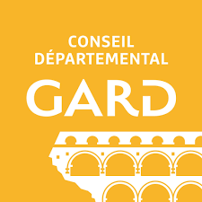

Mes missions de stage
Au conseil départemental du Gard
Ici j'ai eu une grande mission tout au long de mon stage qui était de configurer des commutateurs CISCO & JUNIPER ayant un langage différent l'un de l'autre c'était intéressant à apprendre. J'ai bien sûr effectué des missions sur une journée comme des interventions dans des services.
A Alès Agglomération
Ici j'ai eu le droit à plusieurs grosses missions :
1/ Configurer un routeur RUT240: Le service d’intervention avait besoin d’un routeur 4G pour les accompagner dans les interventions sur site. On a donc décidé de réutiliser un routeur RUT240 qui avait une configuration existante. J’ai donc dû changer les IP configurées, changer le sous-réseau et mettre à jour le firmware.
2/ Transformer un Raspberry pi en routeur sécurisé: La mission consistait en la configuration d’un Raspberry PI en routeur sécurisé, pour cela j’ai dû le
lier à un routeur RUT240 configuré au préalable, j’ai mis à jours les paquets du Raspberry puis j’y
ai configuré un serveur DHCP en utilisant Kea-DHCP (toutes les configs se font à la ligne de
commande), j’ai ensuite dû y ajouter un firewall, de base on utilisait UFW mais on a opté pour
IPTables auquel j’ai dû ajouter un script en shell qui met en place toutes les règles voulues sur le
Pare-feu. Vers la fin du stage je me suis penché de nouveau sur cette mission dans le but d’y ajouter
un IDS/IPS Suricata, configuration que j’ai débuté mais pas terminé.
3/ Configuration par Interface Utilisateur d’un FortiGate (VPN): Via l’interface utilisateur du VPN j’ai pu modifier la configuration d’un FortiGate, on m’a demandé
essentiellement de changer toutes les IP de destinations et les IP Sources puisqu’il s’agissait d’un
VPN déjà configuré mais sur un ancien réseau de l’entreprise. J’ai donc modifié les adresses, les
ports, mit à jour l’OS et installé sur un site ce VPN en prenant soin de bien l’intégrer au réseau sans
créer de problèmes. Le VPN était relié à un routeur ainsi qu’à un HUB auquel les ordinateurs
étaient reliés.
4/ Pour cette dernière mission j’ai réalisé des fiches réflexes qui permettent à n’importe qui se le
réseau de pouvoir suivre les indications de manières claires et précises en cas de cyberattaque, la
première fiche réflexe consistait en la déconnexion d’internet pour les utilisateurs.
